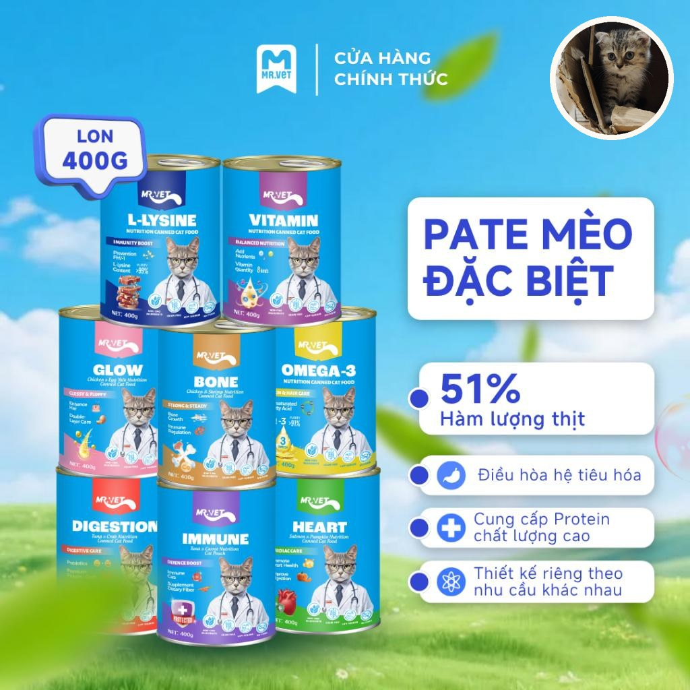
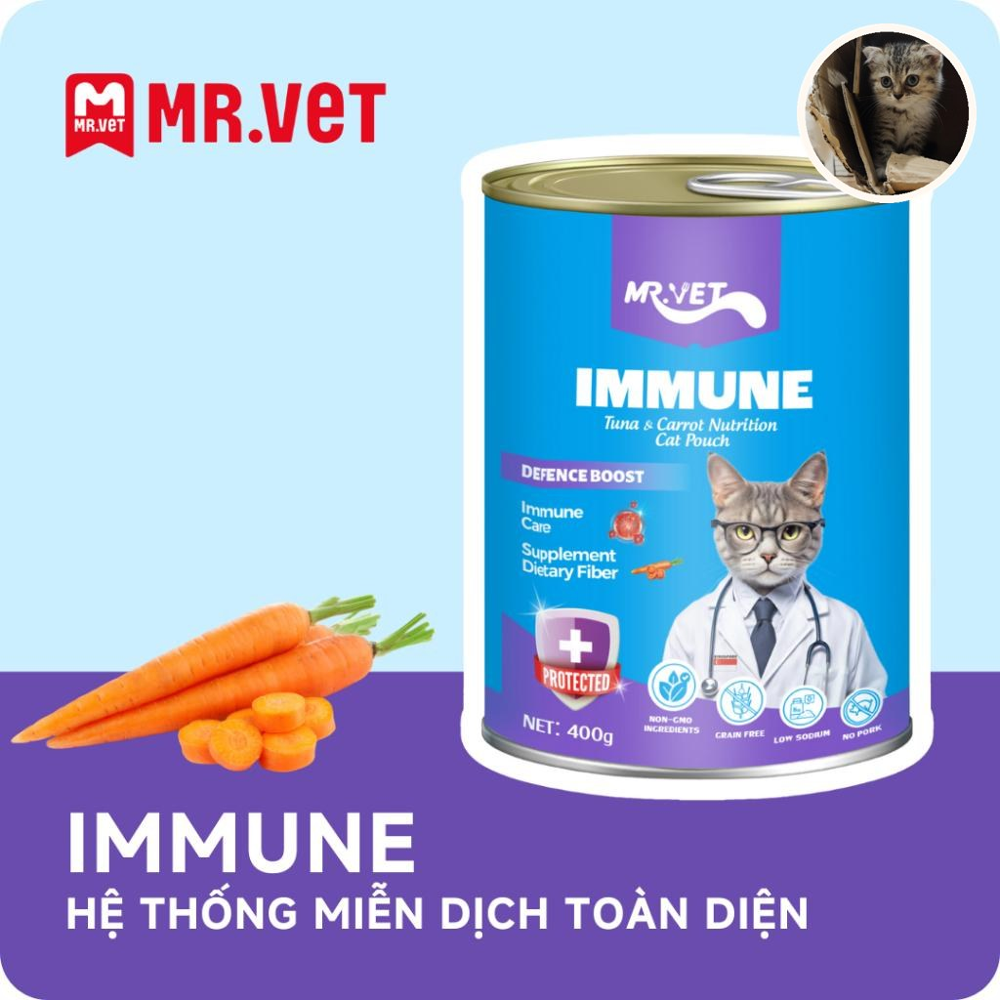
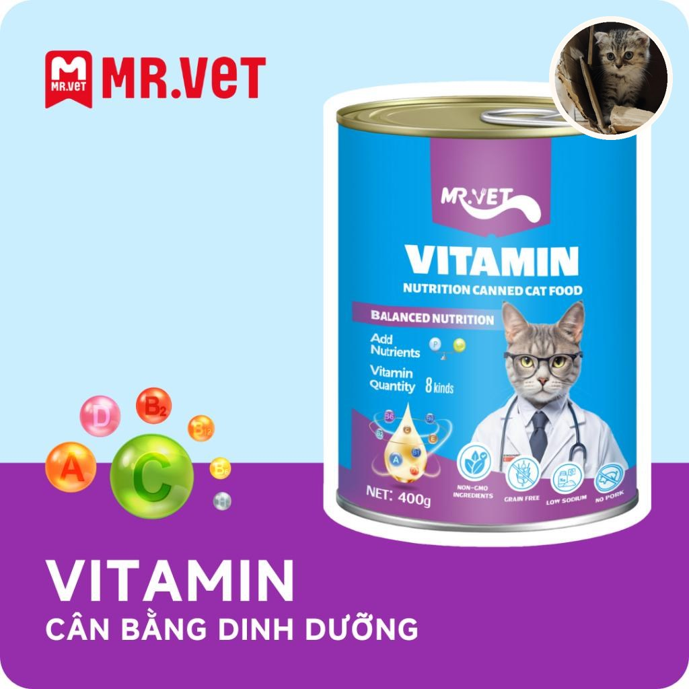
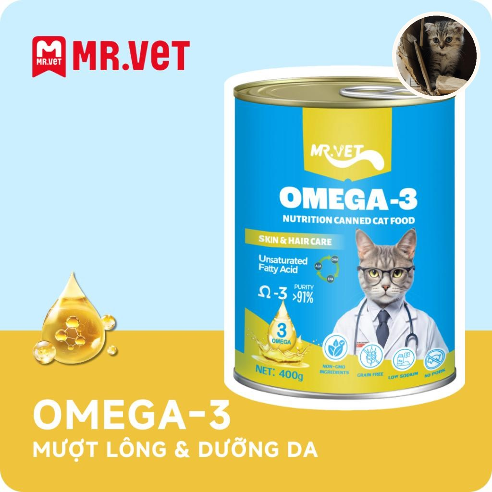
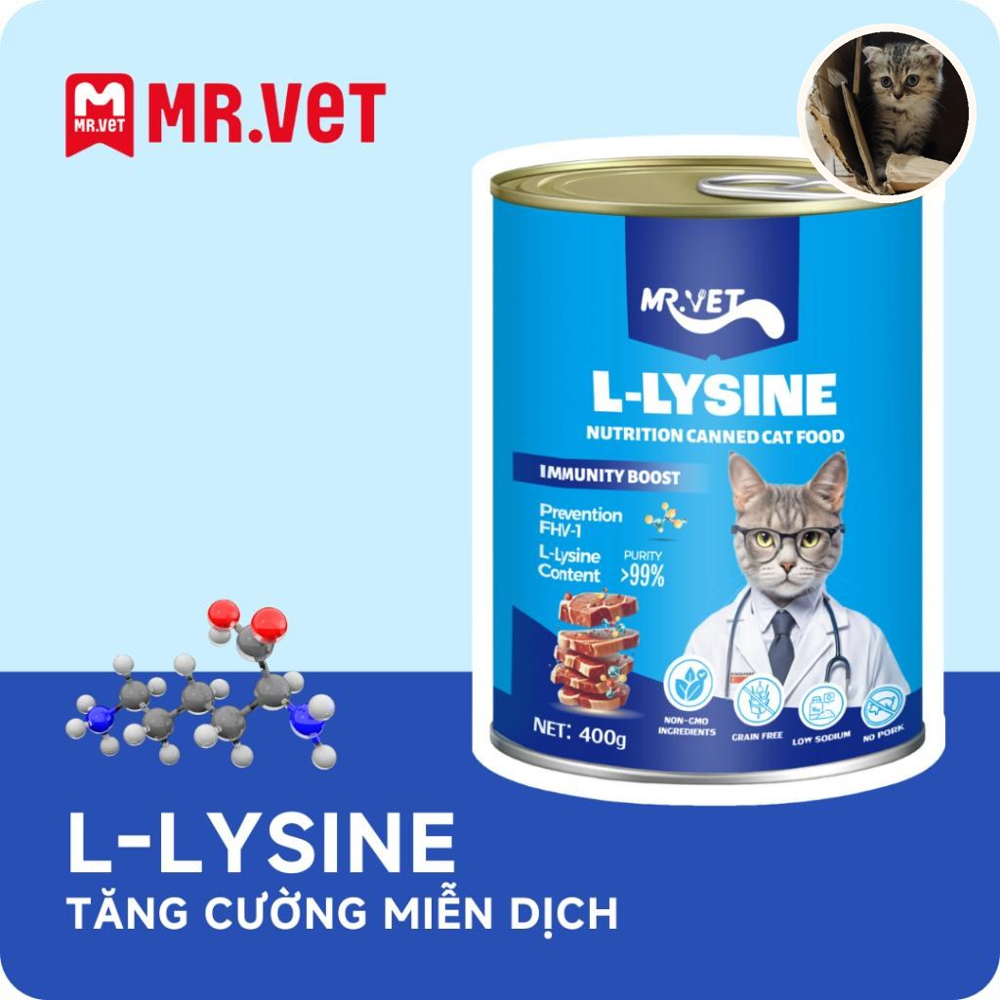
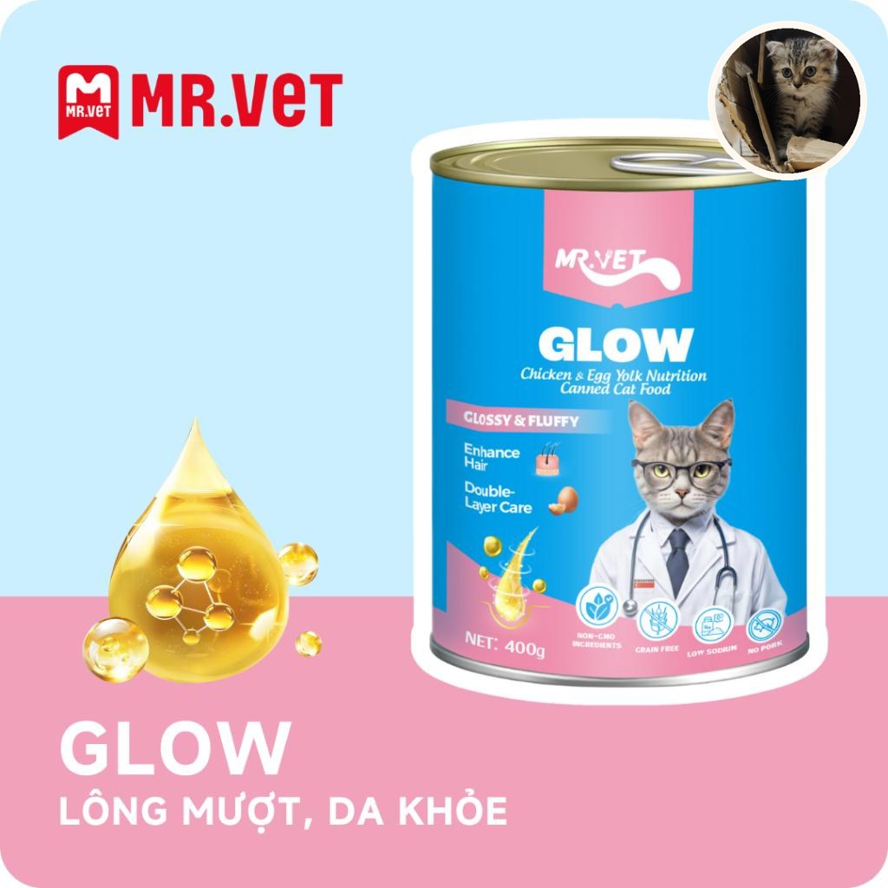
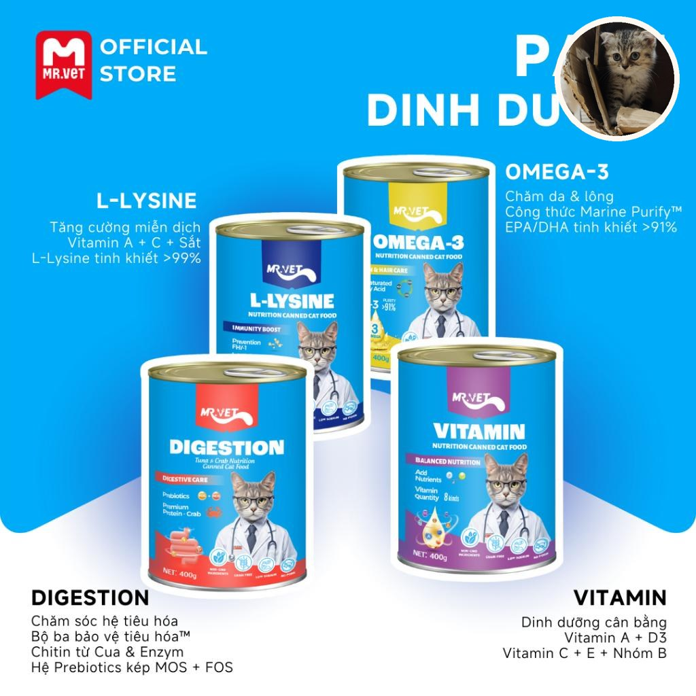

Ảnh lon là bao thật. Mặt tròn góc là Bông nhà tao, không vẽ lại tem. Shop không phải cửa hàng chính hãng Mr.Vet. Link Shopee có hoa hồng.
Lon 400g, chọn vị rồi mới mua

Nhà 3 bé thì lon lời hơn xé từng gói. Mở ra chia bát, phần còn đừy kín, tủ lạnh, ăn trong ngày. Bé mới về lấy 1 vị, đừng mua cả bộ 8.
Immune, cá ngừ và cà rốt

Nhà tao dùng khi bé mới về, đổi môi trường. Không phải thuốc. Sốt, bỏ ăn, lờ đờ thì đi khám.
Vitamin

Vị ăn hàng ngày khi bé đã ăn pate ôn. Không thay bữa hạt kitten.
Omega-3, da lông

Lông khô, hay gãi thì thử lon này 3–4 ngày. Lông bình thường thì không cần mua thêm.
L-Lysine

Bao ghi hỗ trợ miễn dịch. Tao không ghi trị bệnh. Bé hắt hơi, chảy mắt, bỏ ăn: đi phòng khám, đừng tự đổi lon.
Glow, gà và lòng đỏ trứng

Bông ăn mạnh vị này. Một lon chia 3 bé là hết một bữa tối.

Meme đăng video: “Lon mở. Ba bé hết hòa bình.” Bao thật, không vẽ chữ.
Đọc thêm: bé 2–3 tháng ăn bao nhiêu gam, mở ra để tủ lạnh bao lâu.